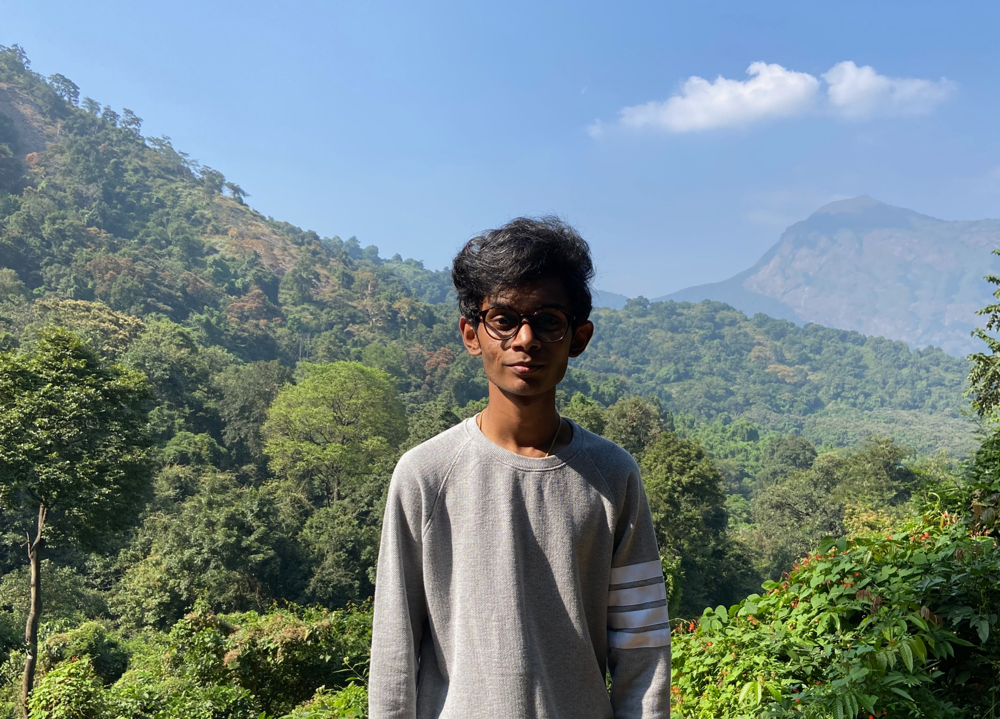

CHARAN PUSHPANATHAN

Product designer, Student, and
Entrepreneur crafting products with the
help of design, ideas, and innovations to
improve human experiences.
A person who is very interested in
Fin-tech 💳.
Currently, building OpenStocks
with core founding team.
He has worked for companies like
Freecharge.
📍 Based in India.
About
Charan was born in India in 2002. He's a product designer currently based in India.
Currently, he is pursuing a pre-final year in Bachelor of Engineering in Computer Science at
Kumaraguru college of Technology in Coimbatore, India.
Charan is interested in Design thinking, innovations, idea, product and human psychology. His
vision is to build great products for the human experience. Designing for everyone creating
solutions for people while interacting with products. He believes in solving problems to improve
people’s lives via design for the human experience.
He has worked for companies like Freecharge.
His POV on design
Designing products to make a better world for human experiences. Good design comes not only
in UI phase its all about end-to-end product aspects. Everyone in the world sees design in the
visual phase. Design is all about the experience. How the people feel about the product while
having interactions. It matters the way sensory stimuli act on the interfaces on the screen.
“Design is not about how it looks it’s all about How it works”. Humans have emotions that tap
into deep emotions that we need to use responsibly.
So, how did he actually works
Building a bridge between work and the Learning curve? He put lots of effort into work. He
believes in Discipline, Honest, and Interest. Surely, It gives more than what you think. So, the
learning curve always follows everywhere in design and life. He is a deep observer. While,
observing taught him many things like confidence, patience, success, and failures.
As a designer to solve people and business problems and improve the product, market fit
balance, and business needs. Like, it all comes from a blank space so it all settles as a solution.
Keeps on saying that go from the root of a problem as much as possible. So, why it matters is
good design wants to reach at the end of the day we are using the products in some of the hard
situations to onboard our tasks on small to big screens. Always he goes to the next “What”
and “Why”?. So, It gives a solution and useful products liked by people in the world.
His process flow is he always organizes his work to sync into learning and productivity. And
gives more importance to priority works, creating concepts to understand easily, he always does
research before stepping into a problem for outcomes, documenting every pain point, and
creating options. So if ‘A’ doesn’t work will go for ‘B’. If ‘B’ also doesn’t work go for C, D, E, F, and it
goes on.